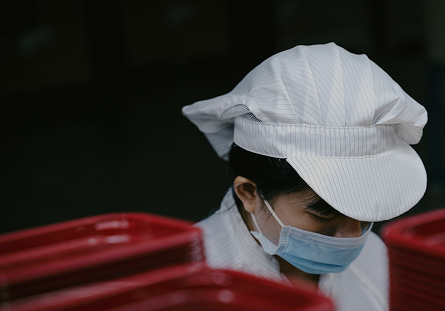

본문 컨텐츠 영역
CJ푸드빌은 건강한 맛
과
정성스런 서비스
를 제공함으로써
모두에게 행복한 장소를 만들어 나가고자 합니다.
ABOUT US
글로벌 외식문화 기업의 시작을 열다
GLOBAL FOODVILLE
소중한 우리의 맛과 차별화된 우리만의 식문화를
CJ푸드빌이 전세계로 알립니다
 인도네시아
인도네시아SUSTAINABILITY
우리와 지구의 더 나은 내일을 위한 SUSTAINABLE F&B 생태계 조성
-
지속가능경영체계
CJ푸드빌은 'ESG경영 리더'로 자리매김 하기 위해 4P 추구가치에 기반한
ESG 전략과제를 수행하고 '미래혁신성장'과 '지속가능 발전'구조를 정립하겠습니다. -
상생/나눔경영
F&B 業(업) 특성과 연계한 사회공헌 활동을 통해
지역사회 발전에 기여하고자 합니다. -

안전경영
고객과 임직원의 안전을 위해
무엇과도 타협하지 않는 안전문화를 실천합니다. -
윤리경영
준법·윤리경영을 지속가능한 성장의 출발점이자 우리의 가치로 인식하며, 글로벌 외식사업을 선도하는 K-FOOD
Company로 도약하기 위해 준법·윤리경영 문화 확산과 글로벌 컴플라이언스 체계 강화를 위한 노력을 멈추지 않겠습니다.
NEWSROOM
가장 빠르고 신속한 소식을 전해드립니다.
CAREER
CJ푸드빌은 전 직무를 대상으로 우수 인력을 상시 채용하고 있습니다.
가장 일하고 싶은 F&B기업,CJ푸드빌과 함께 미래혁신을 만들어 갈 최고인재를 기다립니다.